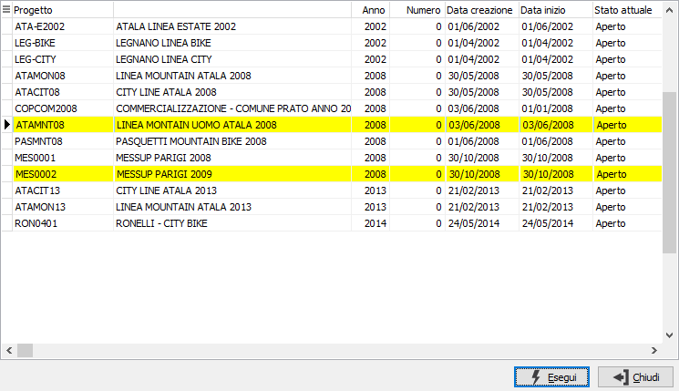

Chiusura progetti
Scopo del programma di servizio è quello di permettere la chiusura manuale dei progetti; viene visualizzata l’elenco di tutti i progetti attivi; utilizzando il doppio click del mouse è possibile selezionare i progetti per la chiusura; alla pressione del tasto F10 tutti i progetti selezionati vengono aggiornati impostando lo stato a Chiuso e la data di chiusura del progetto stesso.
